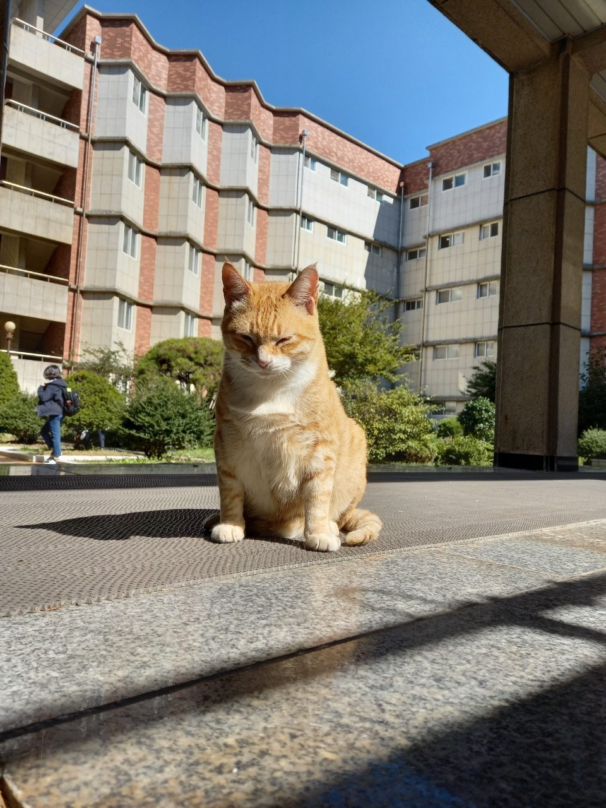
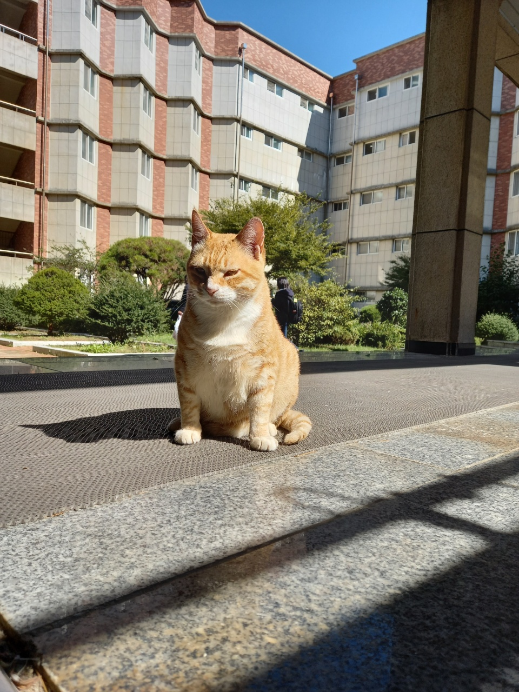
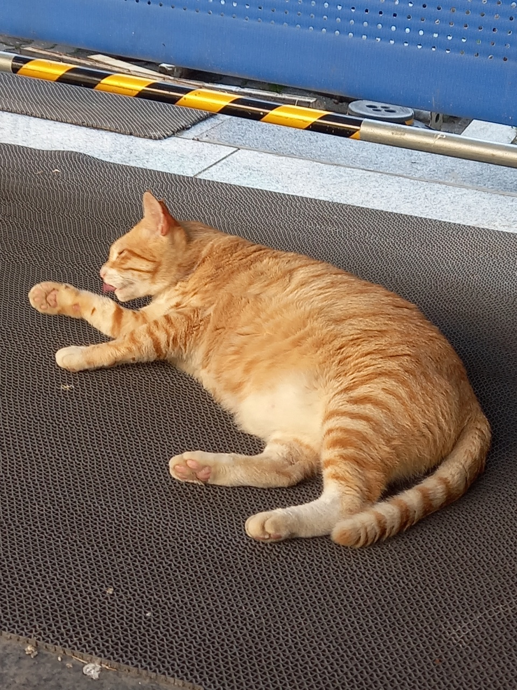

이 웹은 오작공원에 등장하는 크사냥이를 다룹니다.
냥냥이
한과영에 온 지 3년째인 수컷 고양이. 현재는 중성화 상태이다. 삼색이와는 다르게 학생들이 돈을 모아 직접 중성화를 했기 때문에 귀가 잘리지 않았다. 중성화하는 도중 냥냥이가 계속 울어서, 학생들이 간식을 많이 줬다. 그 덕분에 보통 중성화 후에는 사람을 경계하게 되는데 냥냥이는 오히려 사람을 더 신뢰하게 되었다. 빠르게 다가가면 자리를 피하지만, 천천히 다가가거나 기다려주면 오히려 다가오는 개냥이다. 상당히 살이 많이 쪘다. 한과영의 모 학생은 냥냥이를 두고 "여지껏 본 고양이 중 가장 뚱뚱하다"라고 평했다. 그리고 10살이라는 상당히 많은 나이를 가지고 있다. 그 때문인지 냥냥이는 삼색이에 비해 뛰어다니는 일이 적으며, 고양이 장난감에도 별 관심이 없다. 삼색이보다 서열이 높은 것으로 보인다.


